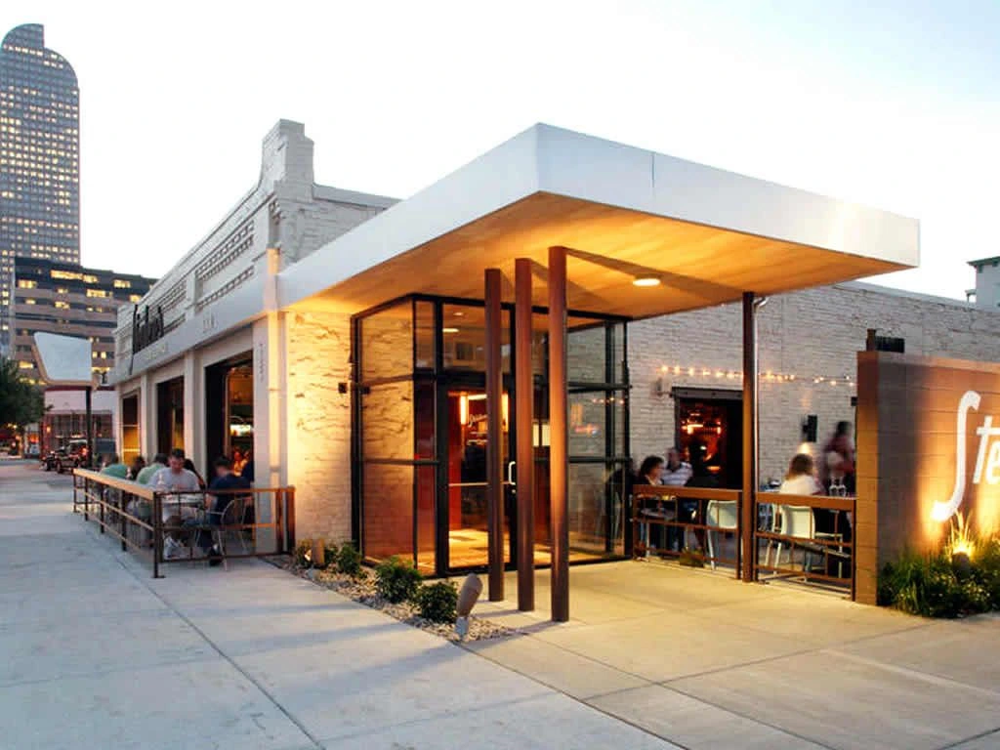

Welcome to The Neon Crust, your neighborhood spot for oversized, cyberpunk-inspired pizza slices in the heart of downtown. We mix traditional wood-fired techniques with wild, unexpected toppings. Stop by for a quick slice, grab a seat under the glowing lights, and experience pizza like never before.
The Beginning: It all started in 2024 when two best friends decided that regular pizza was getting boring.
The Mission: We wanted to create a space where food feels like an adventure, combining retro 80s arcade vibes with top-tier culinary creativity.
The Ingredients: Every single batch of our signature dough is fermented for 48 hours for maximum crunch.
The Community: We source all of our cheeses and fresh veggies from local urban greenhouses because supporting our neighborhood matters.